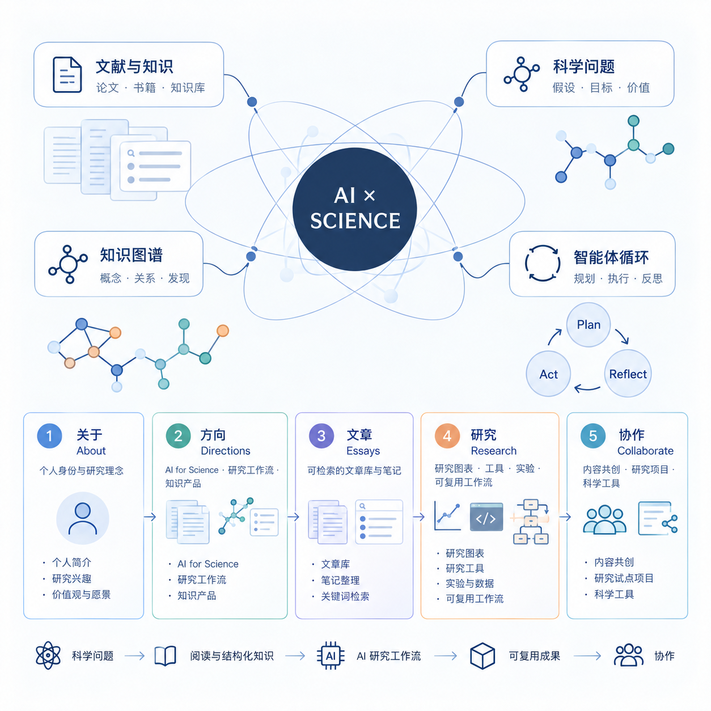

01 / THE LATEST
最近在写
什么。
6月前沿速递 | AI推理模型是假的？苹果证明DeepSeek-R1等大模型根本没有推理能力？
6月前沿速递 | AI推理模型是假的？苹果证明DeepSeek-R1等大模型根本没有推理能力？ 引言 近期，一系列被称为大型推理模型（Large Reasoning Models, LRM）的新模型被提出，其特点是在生成最终答案前会产生详细的思考过程。尽管这些模型在多个推理基准上展示了性能提升，但学术界对其基本能力、扩展规律及内在局限性的…
阅读文章 ↗FIELD NOTE / 02AI大语言模型重塑化学材料研究：从文献助手到发现引擎的回望与前瞻
AI大语言模型重塑化学材料研究：从文献助手到发现引擎的回望与前瞻 人工智能已成为改变科学研究范式的关键力量，而化学与材料科学作为基础学科，正经历着由大型语言模型（LLMs）带来的前所未有的变革。从自动化处理海量科学文献、提取结构化数据，到预测材料的关键性能；从提供战略性的研究洞察，到攻克复杂的化学推理难题；再到驱动自动化实验的初步探索，L…
阅读文章 ↗FIELD NOTE / 03AI开始‘反侦察’？看RAG如何通过主动检索破解模型‘幻觉’困局”
AI开始‘反侦察’？看RAG如何通过主动检索破解模型‘幻觉’困局” 引言： 博士生小张 （抓头）：“导师，我的模型又‘幻觉’了！生成的病例分析全是虚构的药理数据……” 导师 （微笑）：“试试RAG+Search-o1吧，它能像侦探一样主动检索知识库，还能自我修正推理链。” 小张 （瞪大眼）：“啥？AI还能自己查资料、做验证？” 导师 （递…
阅读文章 ↗02 / PERSONAL PROJECTS
最近在做
什么。
03 / KEEP EXPLORING
从一个问题
开始。
看看我正在关注的研究线索、工具和实验。
查看研究 ↗